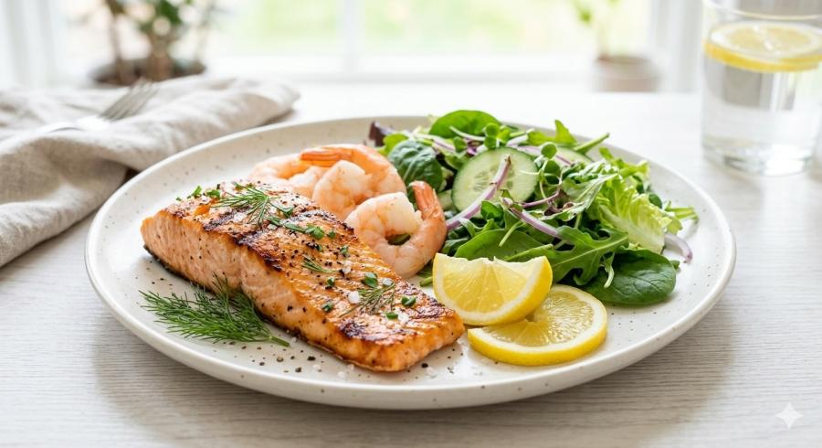

Khử Thâm Môi Có Ăn Hải Sản Được Không? Những Điều Bạn Cần Biết
Sau khi khử thâm môi, nhiều khách hàng thường băn khoăn về chế độ ăn uống để hỗ trợ quá trình hồi phục. Trong đó, câu hỏi khử thâm môi có ăn hải sản được không là một trong những truy vấn được tìm kiếm nhiều trên Google.
Thực tế, không phải ai cũng có chế độ chăm sóc giống nhau. Việc ăn uống sau khi thực hiện nên dựa trên hướng dẫn của kỹ thuật viên và tình trạng hồi phục thực tế của mỗi người, thay vì áp dụng theo những lời truyền miệng trên mạng.
Trong bài viết này, ELLY PMU sẽ giúp bạn hiểu rõ hơn về chế độ chăm sóc sau khử thâm môi, nên ưu tiên thực phẩm nào và khi nào cần hỏi kỹ thuật viên để yên tâm hơn.
Vì Sao Chế Độ Ăn Uống Sau Khử Thâm Môi Được Quan Tâm?
Sau khi thực hiện, môi sẽ bước vào giai đoạn hồi phục tự nhiên. Trong thời gian này, nhiều khách hàng mong muốn xây dựng chế độ sinh hoạt hợp lý để:
- Hỗ trợ môi hồi phục.
- Giữ môi sạch và khỏe mạnh.
- Hạn chế những tác động không cần thiết.
- Duy trì kết quả ổn định.
Một chế độ ăn uống cân bằng không quyết định toàn bộ kết quả, nhưng có thể giúp cơ thể có đủ nền tảng để hồi phục tốt hơn.
Sau Khử Thâm Môi Có Ăn Hải Sản Được Không?
Không có một câu trả lời chung áp dụng cho tất cả mọi người. Việc có cần điều chỉnh chế độ ăn hay không sẽ phụ thuộc vào cơ địa, tình trạng môi, hướng dẫn của kỹ thuật viên và khả năng hồi phục của từng khách hàng.
Nếu bạn thường xuyên ăn hải sản hoặc có tiền sử dị ứng thực phẩm, hãy trao đổi trực tiếp với kỹ thuật viên để được tư vấn phù hợp. Điều này quan trọng hơn việc tự kiêng quá nhiều món theo kinh nghiệm truyền miệng.
Khi Nào Nên Cẩn Thận Với Hải Sản?
Bạn nên thận trọng hơn nếu từng bị ngứa, nổi mẩn, khó chịu sau khi ăn tôm, cua, ghẹ, mực hoặc các loại hải sản khác. Với cơ địa nhạy cảm, giai đoạn môi đang hồi phục là lúc nên ưu tiên sự an toàn và theo dõi phản ứng cơ thể kỹ hơn.
Nếu lỡ ăn hải sản và thấy môi khó chịu bất thường, đừng tự xử lý bằng mẹo tại nhà. Hãy liên hệ cơ sở thực hiện để được hướng dẫn dựa trên tình trạng thật.
Những Thực Phẩm Nên Ưu Tiên Trong Giai Đoạn Hồi Phục
Để cơ thể có đủ dinh dưỡng hỗ trợ quá trình hồi phục, bạn có thể xây dựng chế độ ăn cân bằng với:
- Rau xanh.
- Trái cây.
- Uống đủ nước.
- Thực phẩm đa dạng và phù hợp với sức khỏe.
Điều quan trọng là duy trì lối sống lành mạnh và tuân thủ hướng dẫn sau khi thực hiện.

Mỗi đôi môi có tốc độ hồi phục khác nhau. Một buổi tư vấn đúng sẽ giúp bạn biết cách chăm sóc phù hợp với tình trạng môi của mình.
Ngoài Hải Sản Còn Cần Lưu Ý Điều Gì?
Ngoài chế độ ăn uống, bạn cũng nên dưỡng môi đúng hướng dẫn, giữ môi sạch, không tự bóc lớp bong, uống đủ nước và tái khám đúng lịch nếu được hẹn.
Đây đều là những yếu tố góp phần hỗ trợ quá trình hồi phục. Nếu chỉ tập trung vào việc kiêng một món ăn nhưng bỏ qua chăm sóc môi hằng ngày, kết quả vẫn có thể chưa như mong muốn.
Những Hiểu Lầm Thường Gặp
Cứ Ăn Hải Sản Là Ảnh Hưởng Đến Môi
Không có quy định chung áp dụng cho mọi khách hàng. Điều quan trọng là làm theo hướng dẫn của kỹ thuật viên đã trực tiếp đánh giá tình trạng môi của bạn.
Chỉ Cần Kiêng Ăn Là Đủ
Chăm sóc môi, vệ sinh đúng cách và tái khám cũng rất quan trọng trong giai đoạn hồi phục. Ăn uống chỉ là một phần trong toàn bộ quy trình chăm sóc sau khi làm.
Đọc Kinh Nghiệm Trên Mạng Có Thể Áp Dụng Cho Mọi Người
Mỗi người có cơ địa khác nhau. Thông tin trên Internet chỉ mang tính tham khảo và không thay thế cho tư vấn trực tiếp.
Checklist Sau Khi Khử Thâm Môi
Câu Hỏi Thường Gặp
Thời điểm này sẽ khác nhau tùy vào tình trạng hồi phục. Bạn nên làm theo hướng dẫn của kỹ thuật viên.
Nếu bạn có bất kỳ lo lắng nào sau khi ăn, hãy liên hệ cơ sở thực hiện để được hướng dẫn thay vì tự xử lý.
Việc điều chỉnh chế độ ăn nên dựa trên tình trạng sức khỏe và hướng dẫn cá nhân hóa từ kỹ thuật viên.
Bạn có thể ưu tiên rau xanh, trái cây, uống đủ nước và thực phẩm phù hợp với sức khỏe cá nhân.
Thay vì quá lo lắng về từng món ăn, hãy tập trung vào việc chăm sóc môi đúng cách và trao đổi với kỹ thuật viên nếu có bất kỳ thắc mắc nào trong quá trình hồi phục.
Kết Luận
Khử thâm môi có ăn hải sản được không là thắc mắc phổ biến của nhiều khách hàng. Thay vì áp dụng các danh sách kiêng khem giống nhau cho mọi người, bạn nên tuân thủ hướng dẫn của kỹ thuật viên, duy trì chế độ sinh hoạt lành mạnh và theo dõi quá trình hồi phục của bản thân.